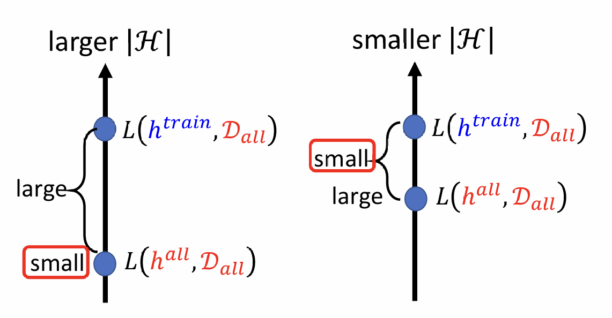
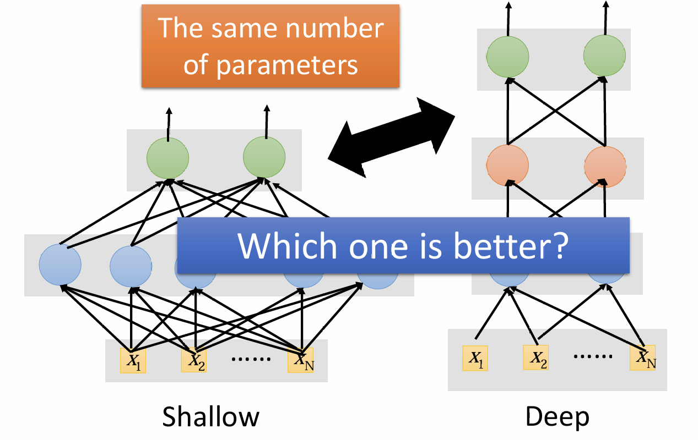
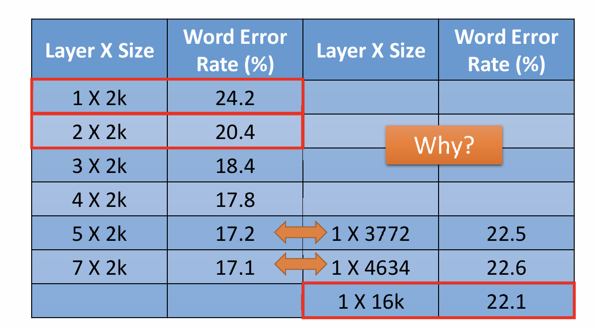
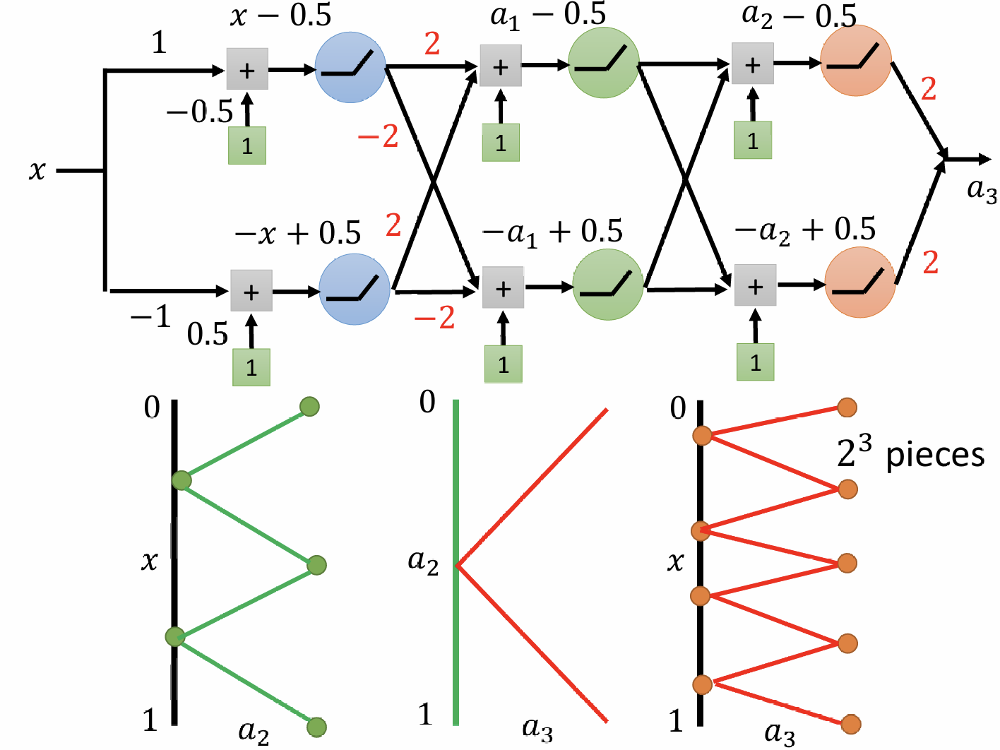
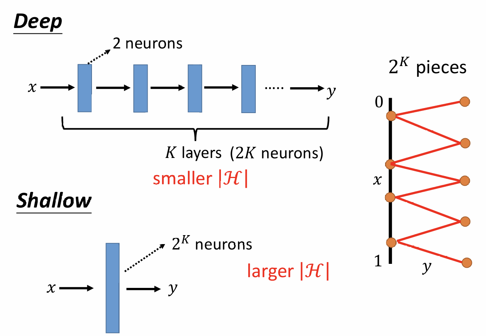

week2我们讲到这样一张图：

本文将探讨Deep Learning是如何做到在一个小的|ℋ|的情况下，仍做到有一个很小的Loss（即$L(h^{all},D_{all})$）。
Why Hidden Layer
我们知道，ML的任务是找到一个function，而这个function可以近似为一个分段Linear的function，而只要Activate function（例如sigmoid、ReLU）足够多，就能表示这样一个function。那么看起来似乎只要一层非常fat的structure就足够了，为什么要deep呢？

下面来看实验结果：

可以看到，在parameter数量相同的情况下，deep network确实要比fat network表现的要好很多。这是为什么呢？
观察下面这张图片：

以此类推，假设我们有$2K$个neural，那么我们就能represent一条$2^K pieces$组成的function。可是如果只使用一层Layer，那么每个neural只能表示一个piece，那么要represent同样的function，需要$2^K$个neural。

[scode type=”green”]虽然一个Hidden Layer能represent任何function
但deep structure更加effective[/scode]
同时，由于deep structure的neural少，那么parameter也会更少，train起来就需要较小的|ℋ|。
但是这时候又有一个疑问：对于复杂的function，deep structure的效果是好，但是对于简单的function，会不会shallow structure效果更好呢？
答案是不会的。有人做过实验：就算是$y=x^2$，deep structure的效果还是要更好。